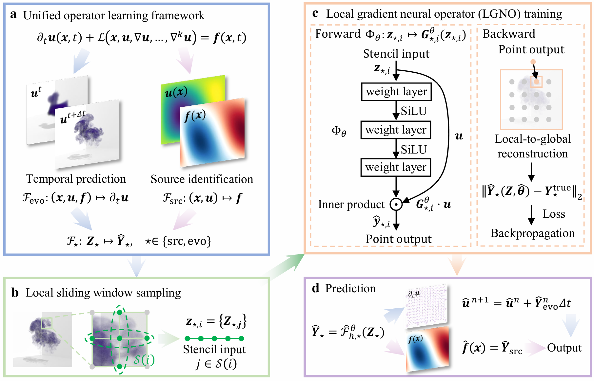
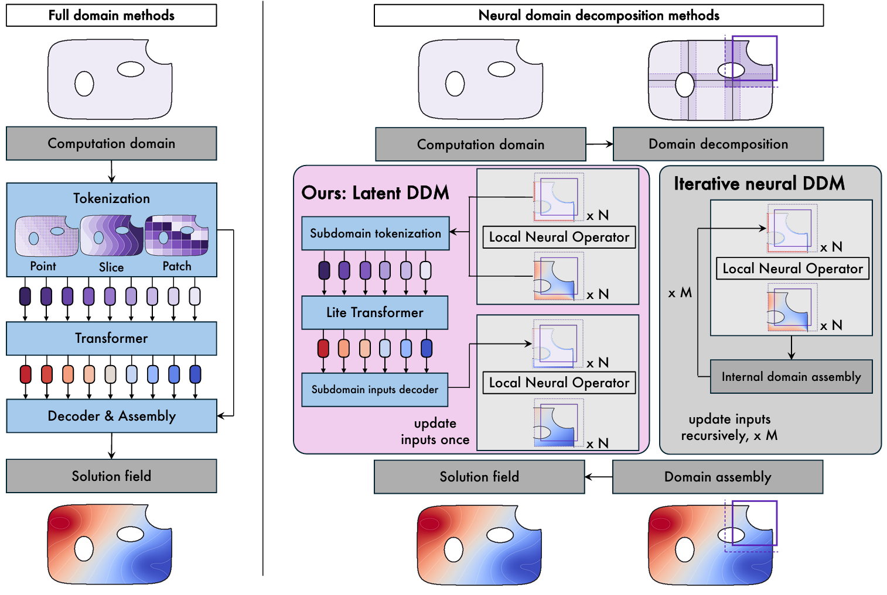
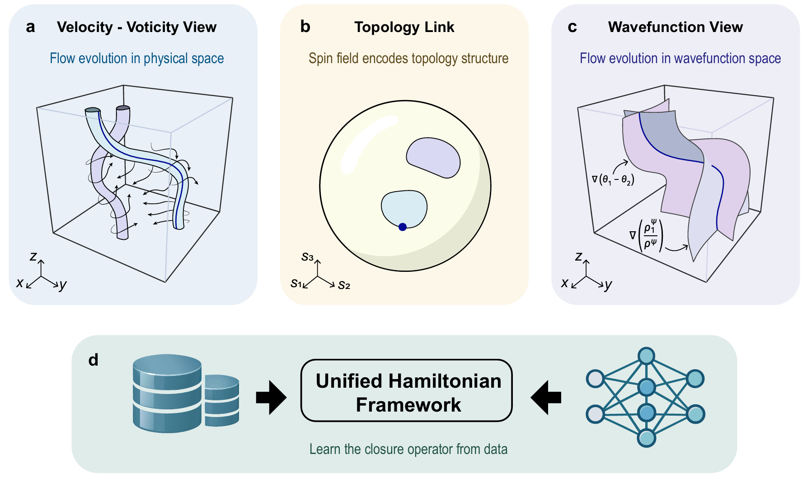
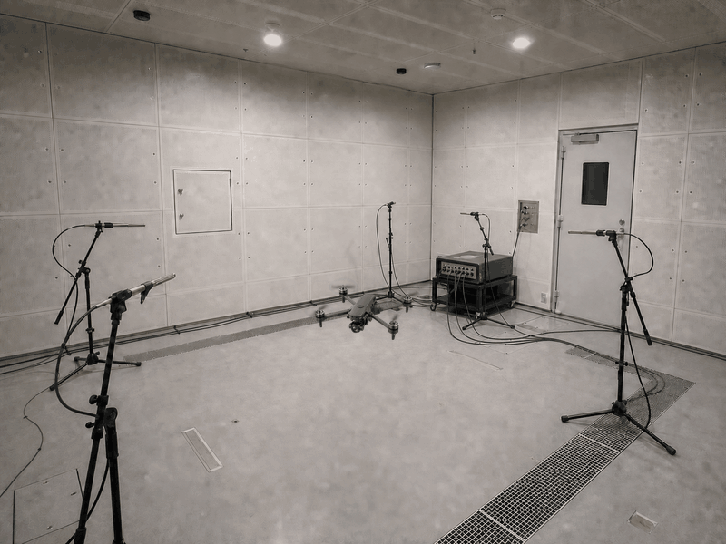

Publications
Authors with * are corresponding authors.
|

|
Gauge-Canonical Eigenfluids: Geometry-Conditioned Neural Spectra for Incompressible Flow
(Preprint)
Baiming Zhang, Zhecheng Wang*, Shiying Xiong, Eitan Grinspun
Gauge-Canonical Eigenfluids learns geometry-dependent, divergence-free flow bases from neural potential fields,
enforcing incompressibility and wall impermeability by construction. Gauge canonicalization makes the three-dimensional
spectral objective well defined, enabling basis prediction for unseen geometries without a new sparse eigensolve.
|
|

|
Local gradient neural operator
(Preprint)
Baiming Zhang, Jinsong Tang*, Ying Xu*, Lihua Chen, Shiying Xiong
A lightweight local-to-global framework learns PDE solution operators from compact local representations,
aiming for efficient prediction with improved stability and interpretability.
|
|

|
Learnable composition for neural operators
(Preprint)
Zituo Chen, Baiming Zhang, Sili Deng*
LatentDDM pairs pretrained local neural operators with a lightweight learnable composition module,
enabling efficient transfer to larger domains and previously unseen operating conditions.
|
Ongoing Research
Note: The following works are ongoing research projects. They may be under submission,
in drafting, or at the conceptual stage, and
should NOT be regarded as final published versions.
Animations are for illustration only and do not reproduce manuscript figures.
Authors with * are corresponding authors.
|
|

|
Data-driven Hamiltonian continuum dynamics
Jinsong Tang, Baiming Zhang, Ziteng Wang, Jia Xiong, Yanru Wang, Yekang Jie, Yunlong Qiu, Shengze Cai, Shiying Xiong*
Participating in a project on neural network based learning of incompressible Schrödinger flow,
with an emphasis on unified perspectives connecting fluid-like dynamics and quantum-inspired systems.
|

|
National Natural Science Foundation of China (NSFC) Undergraduate Project, Principal Student Investigator, CNY 100,000, Sep 2026 – Jun 2027
Study on the Climatic Dynamical Mechanisms of Localized Cold Anomalies Based on Fluid Vortex Evolution
|
|

|
Zhejiang University Future Academic Star Fund, Principal Student Investigator, CNY 20,000, Jun 2026 – Jun 2027
Physics-Constrained AI Time-Domain Inversion for Rotating Noise Sources under Complex Operating Conditions
|
Research Experience
-
Machine Learning in Fluid and PDE Systems
Under Prof. Shiying Xiong.
Jan 2025 – Present
Scientific machine learning, neural operators, PDE learning, and physically informed modeling.
-
Quantum States & Devices Research
Under Prof. Dawei Wang and Prof. Xingqi Xu.
Oct 2023 – Dec 2024
Rydberg atoms, Raman effect, EIT, Fock states, superlattices and related quantum topics.
|
Awards
- International College Student Engineering Mechanics Competition, World Gold Medal! (Top 0.1%), Apr 2025
- Excellent Oral Presentation Award, Undergraduate Academic Forum of the Ministry of Education Mechanics “101 Plan”, May 2026
- Chinese National Zhou Peiyuan Mechanics Competition, First Prize, Nov 2025
- Mathematics Competition for College Students, First Prize, Nov 2023
- Zhejiang Provincial Government Scholarship, 2023–2024 and 2024–2025
- China Aerospace Discipline Scholarship, 2024–2025
- Chu Kochen Honors College Scholarship for Outstanding Students, 2024–2025
|
Other Experience
- Conference Organizing Staff, 2024 International Symposium on Quantum Optics and Quantum Computing, Nov 2024
- Teaching Assistant, Chinese Physics Olympiad (CPhO) Finals Training Camp, 2023–2024
- “Five-Star Volunteer”, Highest Volunteer Honor at Zhejiang University, 2024
- Member of the Technical Department, Zhejiang University Student Engineering Innovation Practice Platform, 2023–2025
|
Collaboration
I am open to any academic collaboration related to fluid dynamics, scientific
machine learning, neural operators, and physical modeling.
Please feel free to contact me!
|
|
 Email
Email
 CV
CV
 Github
Github
 ORCID
ORCID